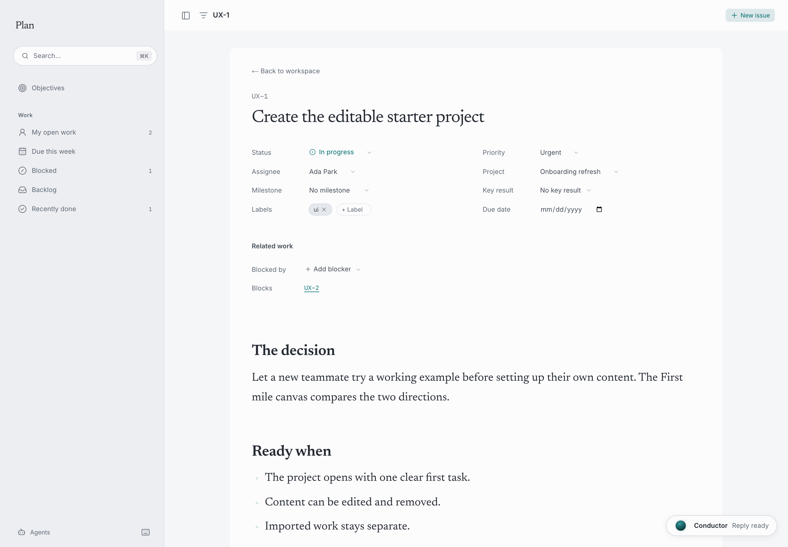

Hanji
HanjiPlanning work
Plan gives work a place, an owner and a next step. People and configured agents work on the same issues and projects; the interface keeps the task and its discussion together.
This guide uses a fictional First mile project. Ada and Noor have decided to try an editable starter project before asking a new teammate to configure their own workspace. From idea to action shows where that decision began.
Create a task someone can act on
Open Plan and select New issue. Give the task a clear title and describe the change you want, including what will count as ready. Set its project, assignee, status and priority as appropriate. Add dependencies when one task needs another to finish first.
For First mile, the task is Create the editable starter project. Its completion criteria are concrete: one clear first task, editable and removable sample content, and separation from imported work.

An issue can also start from selected notes in Think or a passage in Document. Links and references describes supported references between the surfaces.
Ask an agent about a specific task
With the agent and session host configured, mention its handle in an issue comment. The built-in handles are @claude and @gpt; availability depends on the agents configured for your workspace.
For example:
@claude clarify the acceptance criteria for this task and suggest a follow-up to test the first session.
The focused request includes the issue, its discussion and relevant project context. It helps the agent work from a concrete brief rather than making every task part of a single growing conversation. The reply stays attached to the work. A workspace thread can also ask one or more configured agents by mentioning their handles.
An agent's response is a contribution to review. Check the criteria, confirm the scope and decide which suggested follow-up work to keep. A response saying a task is ready is not evidence that the result has been tested.
Ask the conductor about the wider project
Open the conductor when the question crosses tasks or surfaces. You might ask:
What changed in First mile, and what should we review before the next test?
The conductor carries the current issue or view into the conversation. Within the available rights and tools, it can read relevant work, help organize tasks and make supported changes. It can also work with connected pages and canvases. The conductor explains context, approvals and Undo. Agents explains the separate provider setup and access boundaries.
Choose the view that fits the question
Use the list for scanning tasks and their fields, the board for work by status, and the canvas for the arrangement and relationships of work. These are views of the same issues, rather than separate copies to keep in sync.
For goals and the evidence behind them, use Objectives and key results. Link the work that supports a goal and keep check-ins current where they are needed.
Review changes and keep the reasoning
Read the task and its discussion after an agent contributes. Use history to understand changes, and record decisions that someone will need later in Document. Issues and projects are file-backed work with Git history. Workspace configuration and agent sessions have their own durable data, so back them up alongside repositories. The current preview does not provide hosted workspace sync.
Continue with Workspace insights to see recorded contributions across products, or Permissions to understand what each person and agent may access.